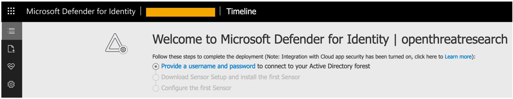
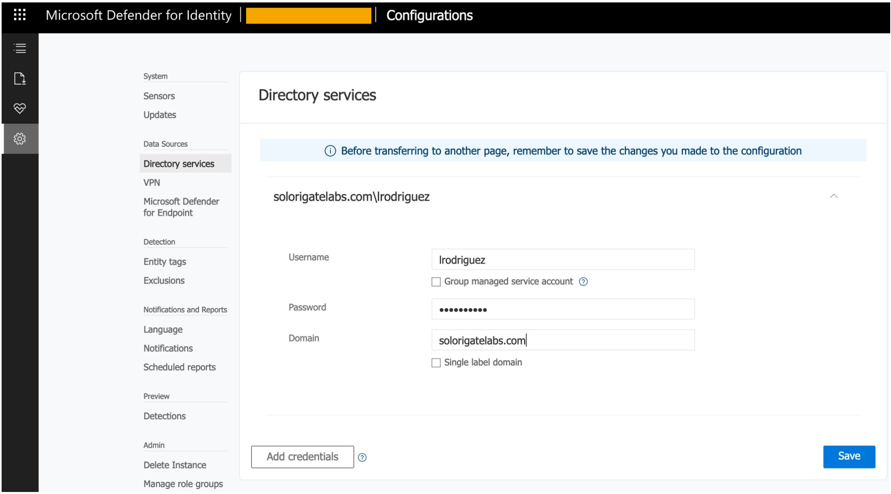
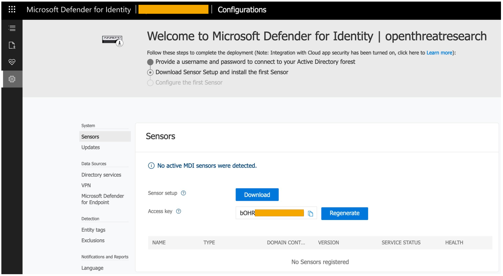
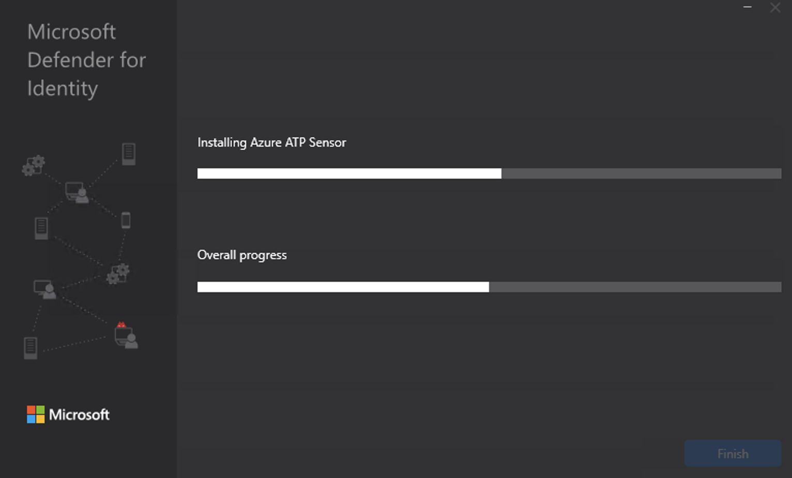
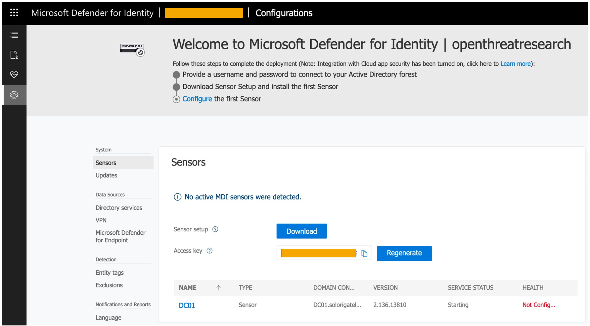

How to set up a Microsoft Defender for Identity Sensor on a Domain Controller
I recently created an Azure Resource Manager (ARM) template to deploy a lab environment to validate the detection of identity attacks and wanted to deploy Microsoft Defender for Identity to test the protection of on-premises identities and correlation of signals with Microsoft 365.
In this post, I will show you how to install and configure a Microsoft Defender for Identity sensor on a Domain Controller.
Requirements
- Active Directory Domain Controller
- Microsoft .Net Framework 4.7 or later installed on the DC
- On-prem AD synced with Azure AD Tenant (Microsoft 365 Subscription)
Access Microsoft Defender For Identity Portal
Browse to https://portal.atp.azure.com/

Connect to On-Prem Active Directory Forest

Download Microsoft Defender for Identity Sensor
- Download to save the package locally
- Copy the Access key. The access key is required for the Defender for Identity sensor to connect to our Defender for Identity instance.

Install MDI Sensor
- Make sure Microsoft .Net Framework 4.7 or later is installed on my servers. You could do it with the following PowerShell command:
Get-ItemProperty "HKLM:\SOFTWARE\Microsoft\NET Framework Setup\NDP\v4\Full").Release -ge 460798
- Extract the installation files from the zip file
- Run Azure ATP sensor setup.exe and follow the setup wizard
- Select your language

- The installation wizard automatically checks if the server is a domain controller, a dedicated server or an Active Directory Federation Services (Server).

- Enter the Access Key from the Microsoft Defender for Identity portal



- After the installation completes, you will see the domain controller sensor in the Microsoft Defender for Identity Portal. It will configure itself as you can see in the images below


That’s it! That’s how easy it is to deploy an MDI sensor in your environment!
References
- https://docs.microsoft.com/en-us/defender-for-identity/install-step1
Subscribe to Open Threat Research Blog
Get the latest posts delivered right to your inbox